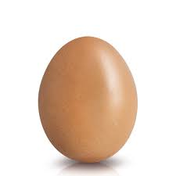

Soft Boiled Eggs

Not too hard, but not too raw either. These eggs are the best option available to those who want to complicate their breakfast every morning.
Ingredients
Steps
- Put the egg in a small saucepan.
- Add enough water so the egg is completely covered
- Put the egg on the stove at max heat
- Keep boiling for two minutes and a half. Not three, not two. Use a countdown timer if possible.
- Drain the boiling water from the saucepan and add cold water immediately when the countdown is over.
- Serve the egg like shown image. The only correct way is by breaking the shell on the flattest extreme of the egg. It's important not to empty the shell contents into a cup.
- Add salt to taste.
- Enjoy!